Stop sign
The octagonal red STOP sign means you must come to a complete halt and yield.
Every sign below appears in the FRSC computer-based test (CBT). Learn them here for free, then sit the timed mock exam.
Nigeria's road signs follow three shapes. A triangle warns you of a hazard ahead. A red circle prohibits something. A blue circle gives a mandatory instruction you must obey. Recognising the shape alone will earn you marks in the test even when the symbol is unfamiliar.
The octagonal red STOP sign means you must come to a complete halt and yield.
The inverted triangle is a Yield (Give Way) sign, instructing you to prepare to stop if necessary.
The red circle with a white horizontal bar means No Entry for vehicular traffic.
A red circle with a number indicates the maximum legal speed limit.
The circular arrows indicate a roundabout. Traffic flows in a circular direction.
A red slash over a U-turn arrow means you are not allowed to reverse your direction of travel here.
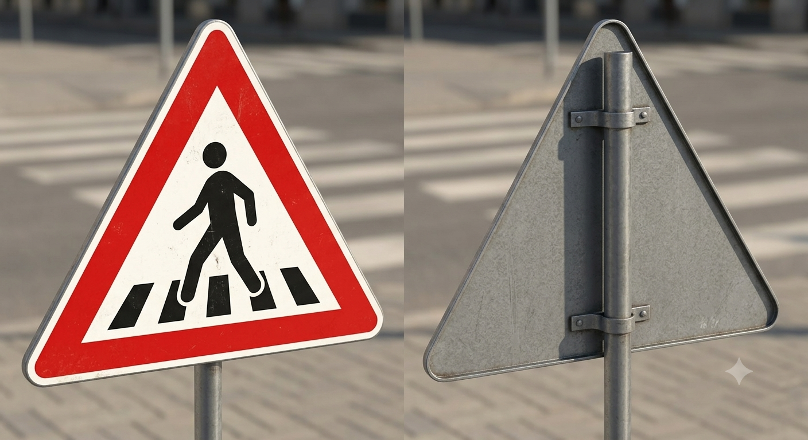
A triangle sign with a walking figure warns of a pedestrian crossing. Slow down.
A rectangular sign with a straight arrow means traffic is permitted in one direction only.
The large 'H' on a blue background denotes a hospital nearby. Drive quietly.
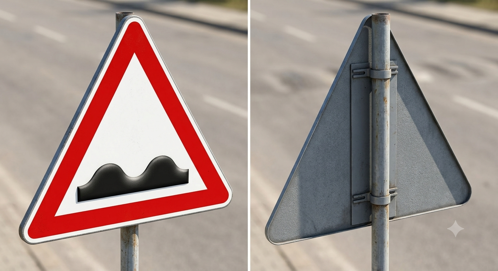
The double humps in a triangle warn of speed bumps or an uneven road surface.
A red circle with a black 'P' and red slash means no parking.
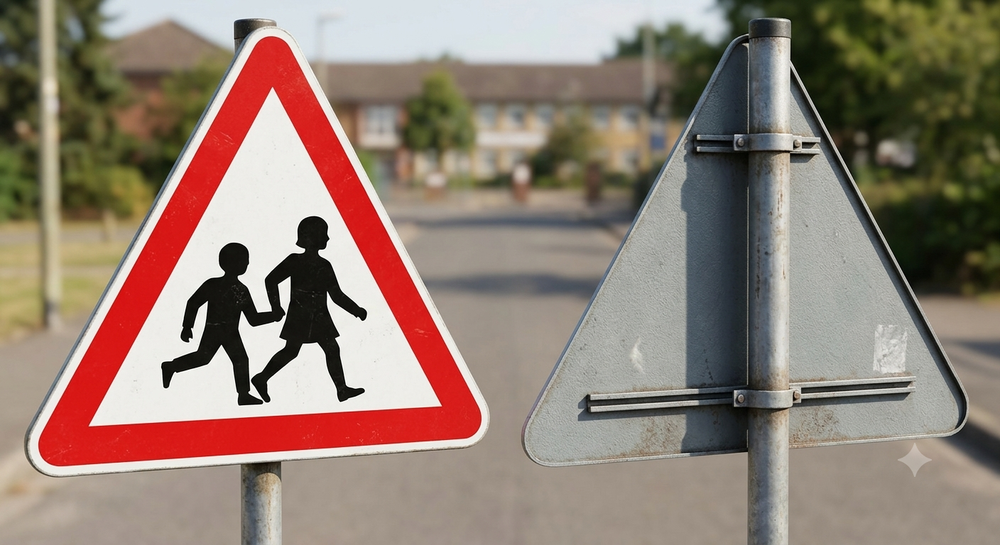
A warning sign with figures of children indicates a school zone. Speed limits are strictly enforced.
Opposing arrows in a warning triangle mean you are entering a two-way traffic zone.
A red circle showing two cars side-by-side (one usually red) means no overtaking is allowed.
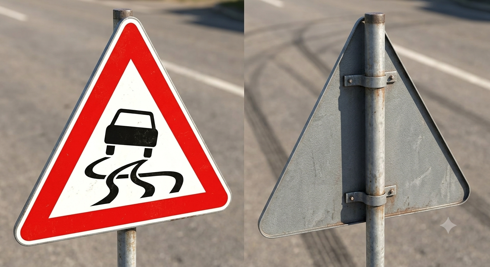
A car with squiggly lines means the road is slippery, especially when wet.
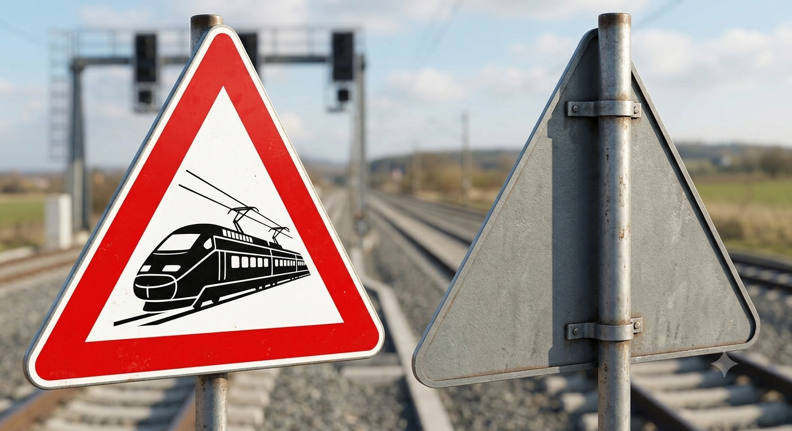
A fence or track symbol in a triangle warns of a railway crossing. Proceed with extreme caution.
The traffic light symbol warns you that you are approaching a signal-controlled junction.
A red circle with a horn and slash means sounding your horn is prohibited in this area.
A blue circular sign with a bicycle dictates a mandatory cycle lane or path.
A steep slope in a warning triangle means a steep descent. Engage a lower gear.
A blue circle with a white right-pointing arrow means you must turn right.
A blue circle with a white left-pointing arrow means you must turn left.
Lines narrowing inwards inside a warning triangle indicate that the road ahead narrows.
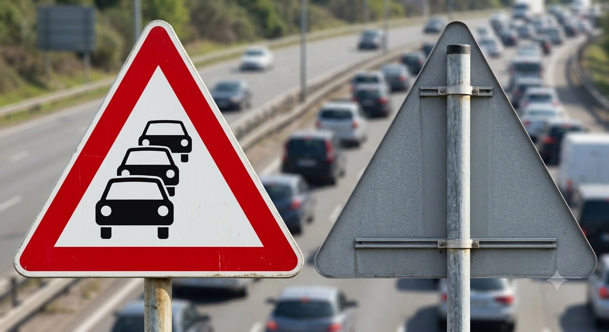
Multiple cars depicted in a warning triangle indicate traffic queues or congestion ahead.
A red slash over a left-pointing arrow strictly prohibits turning left at the junction.
This sign warns of falling rocks from the adjacent cliff or hillside.
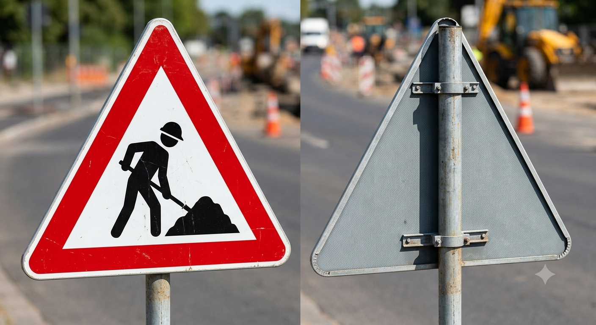
A figure digging indicates road works. Reduce speed and prepare for hazards.
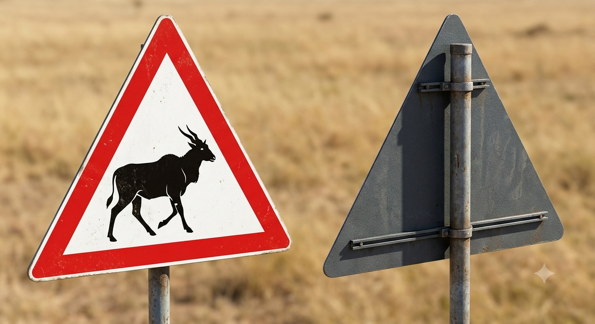
A sign with a wild animal indicates that animals may randomly cross the road. Slow down.
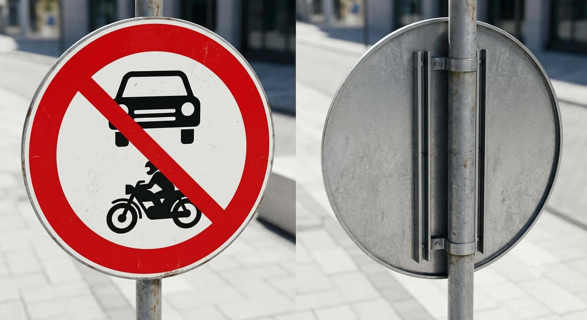
A red circle with a car and motorcycle means neither of those vehicle types may enter.
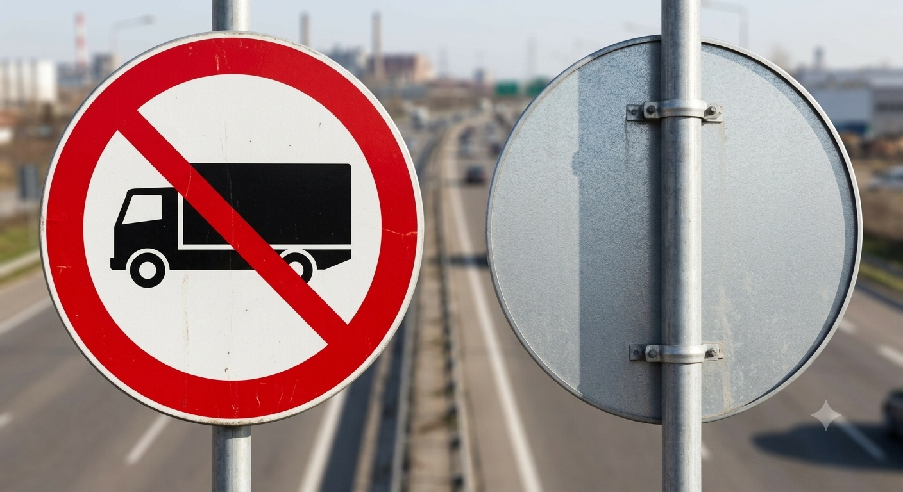
A red circle with a truck silhouette means large trucks/heavy goods vehicles are not allowed.
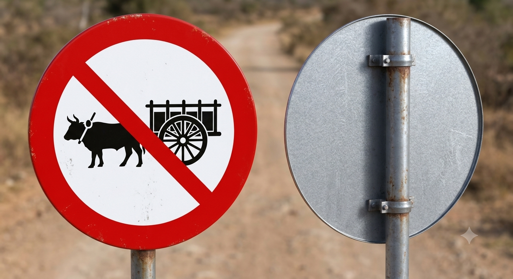
An animal and cart inside a red circle means animal-drawn vehicles are prohibited on this road.
The real FRSC CBT is 40 questions in 30 minutes, and you need 60% to pass. Take the free timed mock exam to see where you stand.
Start the free mock test